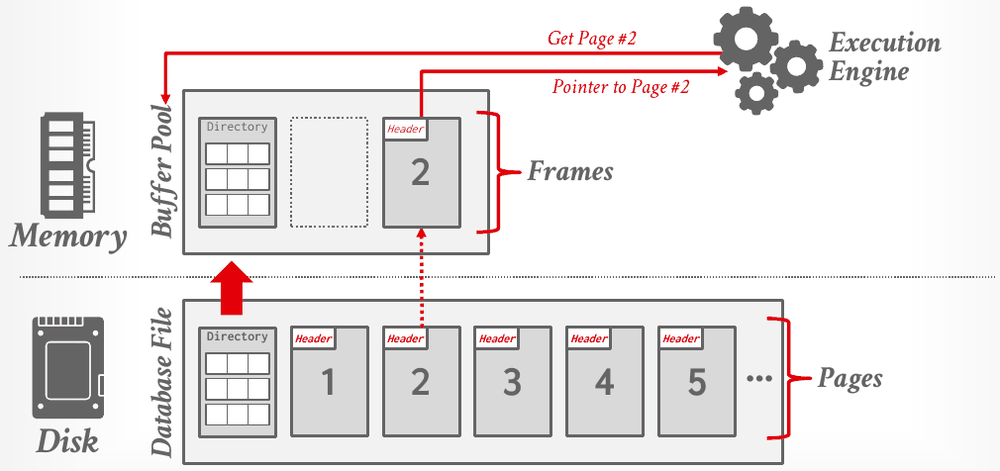
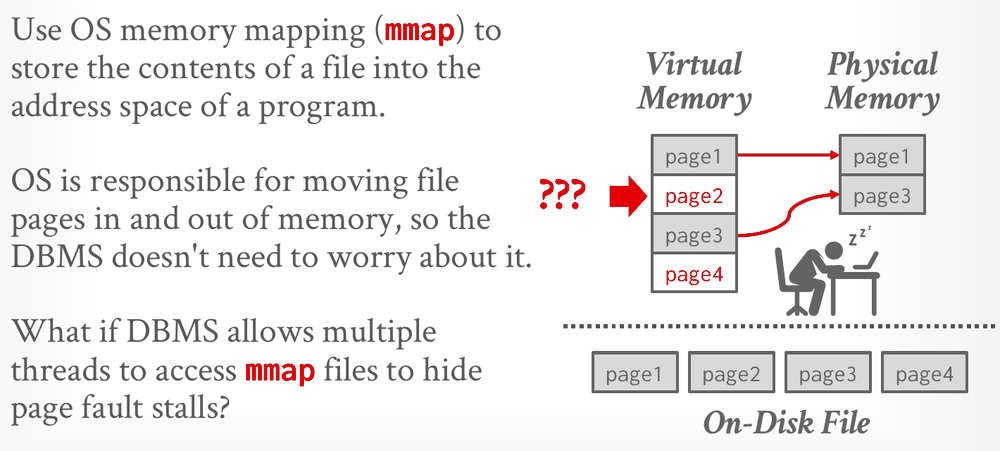
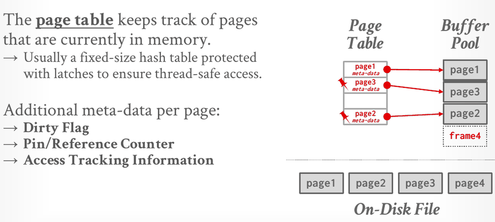
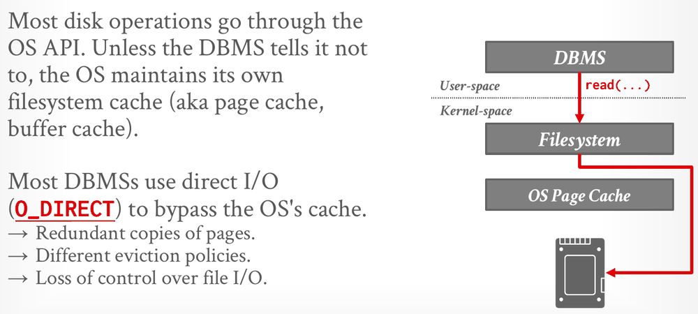

Database Internals in Go · Unit 2 · Lesson 1
Buffer Pools: Frames, Page Tables, Pins, and Dirty Pages
Explain why a DBMS keeps its own buffer pool instead of relying on the operating system, and name the parts Project 1 builds it from: frames, the page table, pin counts, dirty flags, latches and the disk scheduler.
Unit 1 dealt with the first of the storage layer's two problems: how the DBMS lays the database out in pages on disk. This unit deals with the second: how the DBMS manages its memory and moves pages between memory and disk. The CPU can only work on data that is in memory, yet the database can be much larger than memory. The buffer pool bridges that gap. It keeps copies of some pages in memory and lets the rest of the system behave as if the whole database were there. In Project 1 you build one in Go.
BusTub pages are 8 KB (8,192 bytes). A heap file keeps its pages in a single file, numbered from 0. Using the lecture's formula, at what byte offset does page #9 begin?
HW2 Q2(c) asks how many pages, at minimum, the DBMS reads from disk for SELECT MIN(player_id) FROM P WHERE HR = (SELECT MIN(HR) FROM P) under DSM with implicit offsets. P has four equal-width attributes stored in 200 pages (50 per attribute), its contents are the worst case for the query, and memory is unlimited. The official answer is 100 pages, not 150. Why?
Lecture #01 compares σb_id=102(R ⋈ S) with R ⋈ (σb_id=102(S)). What does it conclude?
The buffer pool's job
On a Von Neumann machine, data must be in memory before the CPU can operate on it. A disk-oriented DBMS keeps the primary copy of the database on disk, so every page a query touches must first be copied into memory. The buffer pool manager (BPM) moves pages between disk and memory, and it also acts as a cache: frequently used pages stay in memory, and cold ones are evicted back to storage.

To the rest of the DBMS, the buffer pool should make it look as if the entire database were in memory. A component such as the execution engine asks for a page by its ID and doesn't need to know whether the page is already in memory or must be read from disk. In the other direction, the buffer pool never interprets a page's bytes; it only needs to know which page is where. Because only some pages have to be in memory at any moment, a machine with 1 GB of RAM can work with a 2 GB database, which is the Project 1 writeup's own example.
Lecture #04 splits the storage layer's work into two kinds of control. Unit 1 covered the first, and the buffer pool does the second:
- Spatial control decides where pages are written on disk, keeping pages that are used together physically close.
- Temporal control decides when pages are read into memory and when changed pages are written back, so that queries stall on the disk as rarely as possible.
Not all of a DBMS's memory is buffer pool. Slide 7 lists other pools: sort and join buffers, query caches, maintenance buffers, log buffers and dictionary caches. These are not always backed by disk, and the notes say they can simply use an ordinary memory allocator.
Why not let the operating system do it?
The operating system already moves file pages in and out of memory. With mmap, a program maps a file into its virtual address space and then reads and writes the file as ordinary memory. The OS loads pages on demand and evicts them when physical memory runs short.

Lecture #04 lists four problems with letting the OS manage database pages this way:
- Transaction safety: the OS can flush dirty pages to disk at any time, including before the DBMS considers a change safe to write.
- I/O stalls: the DBMS doesn't know which pages are in memory, so any access can stall a thread on a page fault.
- Error handling: pages are hard to validate, and any access can raise a
SIGBUSsignal that the DBMS must handle. - Performance: contention on the OS's internal data structures, and TLB shootdowns.
System calls can patch some of this. madvise tells the OS how pages will be read, mlock stops ranges from being paged out, and msync flushes ranges to disk. The lecture's verdict is that using these calls to make the OS behave correctly "is just as onerous as managing memory yourself." The DBMS knows more about its workload than the OS does, so it can do better at flushing dirty pages in the correct order, at prefetching, at choosing which page to evict, and at scheduling its threads. The slide sums it up as "The OS is not your friend." The CMU group's paper Are You Sure You Want to Use MMAP in Your Database Management System? (CIDR 2022) makes the full case.
Frames hold pages
The buffer pool is a region of memory organized as an array of fixed-size slots, and each slot is a frame. When the DBMS requests a page, the buffer pool places an exact copy of that page into one of the frames. The Project 1 writeup defines the two terms:
- A page is 8 KB of logical data. It can be on disk, in memory, or both, and its page ID identifies it.
- A frame is a fixed 8 KB block of memory that holds one page at a time. Its frame ID is its index in the pool.
In the writeup's words, the buffer pool stores logical pages inside physical, fixed frames. Frames are reused: over the system's lifetime one frame holds many different pages. A page ID is therefore a page's permanent name, while a frame ID only says where in memory the page sits right now. If page 12 is evicted from frame 3 and read back later, it may well land in frame 5.
In the Go module (intro_to_db/bufferpool), the sizes and IDs come from common: common.PageSize is 8192, and page and frame IDs have the types common.PageID and common.FrameID. A pre-built FrameHeader (frame_header.go) describes each frame. Its fields are frameID, data (a []byte of common.PageSize bytes), pinCount, isDirty and rwlatch. The BufferPoolManager keeps the headers in frames []*FrameHeader. NewBufferPoolManager puts every frame ID on freeFrames, the free list of frames that hold no page yet. New page IDs come from NewPage, which hands them out from an atomic counter that only ever increases.
common.PageID and common.FrameID are both int32 underneath, but they are distinct named types. Go never converts between named types implicitly, so passing a PageID variable where a FrameID is expected doesn't compile without an explicit conversion. That catches a page/frame mix-up that is easy to make in this project. Untyped constants still convert silently, though: in a test call such as RecordAccess(1, 1, AccessUnknown), nothing stops you from swapping the frame and page arguments.
The page table and the page directory
Pages don't sit in the buffer pool in the same order as on disk, so the BPM needs an index of what is where. The page table tracks the pages currently in memory, mapping each resident page ID to the frame that holds it. The slide notes that it is usually a fixed-size hash table protected by latches. In the Go module it is pageTable map[common.PageID]common.FrameID, guarded by bpmLatch.

The slide lists three pieces of per-page metadata: a dirty flag, a pin/reference counter, and access tracking information, which the notes describe as recording which transactions or threads are accessing the page. In Project 1 the first two are fields of FrameHeader, and tracking accesses is the replacer's job, the subject of the next lesson.
The BPM also uses the page table to keep only one copy of each page in memory. The writeup shows what goes wrong otherwise. Thread T1 loads page X into a frame and starts changing it, producing version X2. Thread T2 loads the same page into a different frame and changes it into X3. T2 writes X3 to disk, then T1 writes X2 over it, and T2's changes are lost. Because every request for page X goes through the page table and finds the same frame, all threads work on a single copy.
Don't confuse the page table with the page directory from Unit 1. They answer different questions:
| Page directory | Page table | |
|---|---|---|
| Maps a page ID to | the page's location in the database files | the buffer-pool frame holding a copy of the page |
| Lives | on disk; often also cached in memory | only in memory |
| After a restart | must still be correct, so every change is recorded on disk | starts empty; nothing to recover |
| In this course's code | disk.FileManager's map from page ID to file offset (Unit 1, Lesson 1) | BufferPoolManager.pageTable |
The FileManager map does the directory's job of locating pages, but like BusTub's disk manager it lives only in memory, so a new FileManager starts with no pages. Project 1 never restarts a database, so that is enough. The BPM never looks inside that map: it hands page IDs to the disk layer and gets bytes back.
Operating systems also have "page tables", which map virtual addresses to physical memory. In this course, "page table" always means the buffer pool's map from page IDs to frames.
Pins and dirty flags
The pin count of a frame is the number of threads currently using its page, for reading or for writing. A thread must increment it before touching the page, and while the pin count is above zero the BPM may not evict the page. A pin promises nothing more. The notes stress that pinning does not stop other threads from accessing the page at the same time; keeping readers and writers apart is a latch's job.
In the Go code the count is FrameHeader.pinCount, an atomic.Int64. The replacer keeps its own record of which frames may be evicted, set with ArcReplacer.SetEvictable, and the writeup tells you to keep the two in sync: when a page's pin count drops to 0, its frame must be marked evictable. If every frame is pinned and a request needs a frame, the buffer pool is out of memory. The notes say an error is thrown; in Project 1, CheckedReadPage and CheckedWritePage return (nil, false). The writeup says plainly that, unlike the replacer's own lists, the buffer pool will run out of frames.
The dirty flag (FrameHeader.isDirty) is set when a thread modifies the page. It means the in-memory copy differs from disk and must be written back before the frame is reused. The buffer pool is a write-back cache: changes stay in memory and reach disk later. A write-through cache would send every change to disk immediately. Eviction therefore has two paths (slide 32):
- On the fast path, the victim is clean, so the BPM simply drops it and reuses the frame.
- On the slow path, the victim is dirty, so the BPM must write it back to disk before reusing the frame.
The lecture calls this a trade-off between fast evictions and writing out dirty pages that may never be read again. One way to avoid the slow path is background writing, also called page cleaning or buffer flushing: the DBMS periodically walks the page table, writes dirty pages out early, and then either evicts them or just clears their dirty flags. The slide adds a warning that a dirty page must not reach disk before its log records do, which Unit 9 explains. Project 1 has no background writer. Its BPM writes a page when it evicts a dirty victim or when told to flush. The flush methods are FlushPage, FlushAllPages, their Unsafe variants, and a guard's Flush(), and they write pages out without evicting them.
Latches versus locks
Many threads use the buffer pool at once, so its data structures need protection. Lecture #04 separates two kinds of protection that everyday programming lumps together as "locks":
| Lock | Latch | |
|---|---|---|
| Protects | the database's logical contents (tuples, tables) from other transactions | critical sections of the DBMS's internal data structures from other threads |
| Held for | the whole transaction | one operation |
| Rollback | must be able to roll changes back | doesn't need to |
| Nature | a higher-level, logical primitive; the DBMS can show users which locks are held | a low-level primitive, often a mutex or a condition variable |
Project 1 has only latches, and in Go they are plain mutexes. BufferPoolManager.bpmLatch, a *sync.Mutex that the page guards share, protects the page table, the free list and the BPM's other bookkeeping. Each FrameHeader.rwlatch is a sync.RWMutex that protects one frame's bytes, allowing many readers at once or a single writer. The ArcReplacer has its own latch. The writeup notes that latches are called "locks" in operating systems, and some starter comments do the same: FlushPage's doc comment says to "take a lock on the page", which means the frame's latch. Locks, which protect data on behalf of transactions, come back in Unit 7.
A page guard holds both a pin and a latch. When a caller gets a *ReadPageGuard or *WritePageGuard from the BPM, the guard owns a pin, so the page can't be evicted, and the frame's latch in shared or exclusive mode, so no one writes while you read and no one touches the page while you write. The guard's Drop() gives both back. Go has no destructors, so you call it yourself, usually with defer guard.Drop().
#04 Memory Management, "Database storage basics" (1:05), slides 4–16: the lecture's first part, from the disk-oriented architecture through frames, the page table, locks versus latches and the page directory to why not mmap.
The disk I/O path
A page read or write from the BPM still has to go through the operating system.

read() goes through the filesystem and, unless the DBMS opts out, through the OS page cache. With O_DIRECT the request bypasses that cache, leaving the buffer pool as the only cache in the path (Lecture #04, slide 36).Unless told otherwise, the OS keeps its own filesystem cache, the OS page cache. A DBMS with its own buffer pool would then keep redundant copies of its pages under two different eviction policies, and it would lose control over when file I/O really happens. Most DBMSs therefore open their files with direct I/O (O_DIRECT). PostgreSQL is an example of a DBMS that uses the OS page cache instead.
If fsync fails with EIO, Linux marks the dirty pages clean. If the DBMS then calls fsync again, Linux reports success, although the data never reached the disk. A DBMS that treats the OS as its friend will believe the write happened (slide 37).
The OS and the hardware also have I/O schedulers. They reorder and batch requests to maximize disk bandwidth, but they can't tell which requests are more important. Many DBMSs (Oracle, Vertica, MySQL) tell you to switch Linux to the deadline or noop (FIFO) scheduler. The DBMS keeps its own internal queues of page reads and writes and sets priorities from what only it knows: sequential versus random I/O, critical-path versus background tasks, table versus index versus log versus ephemeral data, transaction information, and user SLAs (slide 35).
Project 1's DiskScheduler is the smallest version of that idea: one first-in, first-out queue and one background worker goroutine. The BPM never calls the disk manager directly. It describes each operation as a DiskRequest and schedules it:
IsWritesays whether the request is a read or a write.Datais the memory to read into or write from, normally the frame's own[]byte. A slice shares its backing array, so a read lands directly in the frame.PageIDnames the page on disk.Callbackis achan boolon which the worker reports completion:trueonce the request is done,falseif the disk manager returned an error.
Schedule([]DiskRequest) puts the requests on requestQueue, a common.Channel (an unbounded FIFO queue whose Put never blocks), and returns at once. The worker goroutine, started by NewDiskScheduler, takes requests off the queue and runs each one on a disk.Manager: disk.FileManager for a real file, or disk.MemoryManager, an in-memory disk that many tests use. Shutdown() queues a stop signal behind the pending requests and waits for the worker to finish. The issuer waits on the callback, as the doc comment in disk_scheduler.go shows:
cb := scheduler.NewCallback() // promise + future
scheduler.Schedule([]DiskRequest{{IsWrite: false, Data: buf, PageID: pid, Callback: cb}})
ok := <-cb // future.get()BusTub gives each DiskRequest a std::promise<bool>: the worker calls set_value, and the issuer blocks in the matching future's get(). In Go, one channel plays both roles. NewCallback makes it with capacity 1, so the worker's single send never blocks, even if the issuer receives late or not at all. With one worker taking requests in FIFO order, requests for the same page are handled in the order they were scheduled.
Neither BusTub's disk manager (a C++ fstream) nor the Go FileManager (os.OpenFile without O_DIRECT) uses direct I/O, so their reads and writes pass through the OS page cache. That is fine for a teaching system, because Project 1 is about the buffer pool's own decisions, but most production DBMSs use direct I/O (slide 36).
#04 Memory Management, "Flushing and IO scheduling" (1:06:56), slides 32–37: dirty pages, background writing, disk I/O scheduling, the OS page cache and the fsync problem.
How Project 1 fits together

Project 1 has four parts, and each one knows only what it needs:
| Part (file) | Job | Knows about |
|---|---|---|
ArcReplacer (arc_replacer.go) | Decides which frame to give up when the BPM needs one: RecordAccess, SetEvictable, Evict, Remove, Size | Frame IDs, page IDs, access history and which frames are evictable, but not page bytes or the disk. |
DiskScheduler (disk_scheduler.go) | Runs page reads and writes on a background goroutine: Schedule, plus the worker | Page IDs and byte buffers, but not which page to evict. |
ReadPageGuard / WritePageGuard (page_guard.go) | Give a caller safe access to one page: Data, DataMut (write guards only), IsDirty, Flush, Drop | One frame, one pin and one frame latch, plus the replacer, bpmLatch and the disk scheduler, which it needs when it is dropped or flushed. |
BufferPoolManager (buffer_pool_manager.go) | Ties it together: NewPage, CheckedReadPage / CheckedWritePage (and the panicking ReadPage / WritePage), DeletePage, the Flush methods, GetPinCount | The page table, the frames, the free list and the BPM latch, but not what a page's bytes mean. |
The doc comment of CheckedWritePage asks you to think through three cases for a page request. Two are easy: the page is already resident, so no I/O is needed, or a free frame is available. In the hard case there is no free frame, so the BPM asks the replacer for a victim, writes the victim back if it is dirty, and reads the requested page into the freed frame through the disk scheduler. In every case the BPM then pins the frame, records the access in the replacer and marks the frame non-evictable, all while holding bpmLatch. Only after releasing bpmLatch does it build the guard, whose constructor takes the frame's latch. The doc comment of newReadPageGuard fixes that division of work, and the guard and BPM lessons explain why the order matters. When the caller drops the guard, the latch and the pin are given back, and once the pin count is 0 again the frame becomes evictable.
The coding lessons build these parts bottom-up, in the order doc.go lists: ARC bookkeeping (P1.1), ARC eviction and ghost lists (P1.2), the disk scheduler (P1.3), page guards (P1.4), the BPM's fetch and evict paths (P1.5), and deletion, flushing and concurrency (P1.6). Before those, the next lesson covers replacement policies, the theory behind the replacer.
#05 Database Storage II, "Project 1 instructions" (1:04:03): Andy Pavlo walks through the three Project 1 tasks, from the ARC replacer to the buffer pool manager.
Check your understanding
A 3-frame buffer pool is full and its free list is empty. Frame 0 holds page 4 (pin count 1, clean), frame 1 holds page 7 (pin count 0, dirty), and frame 2 holds page 9 (pin count 0, clean). A thread asks for page 12, which is not in memory. Which statement is right?
Which statement correctly distinguishes the page table from the page directory?
A goroutine holds a *ReadPageGuard on page 7, so page 7's frame has pin count 1. What does the pin itself guarantee?
Lecture #04 lists four problems with letting the OS manage database pages through mmap. Which of these is not one of them?
Lecture #04 argues that a DBMS should keep its own queue of page read and write requests rather than rely only on the OS's I/O scheduler. Why?
Primary sources: CMU 15-445/645 Fall 2025 Lecture #04 slides and notes; Lecture #05 slides 30–33 (Project #1 overview); the Project #1 writeup (Overview, Task #2, and Task #3 with its Concurrency section); BusTub src/include/buffer/buffer_pool_manager.h, src/include/storage/disk/disk_scheduler.h and src/storage/disk/disk_manager.cpp at commit d49b823; this course's intro_to_db/bufferpool, common and storage/disk packages.